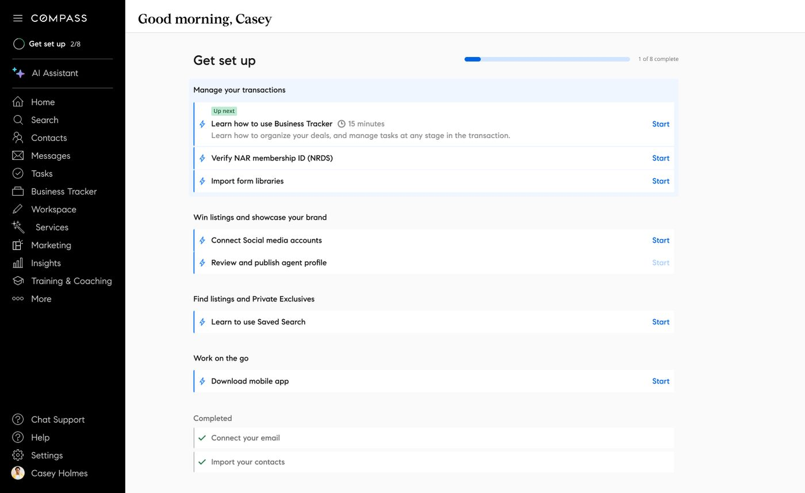
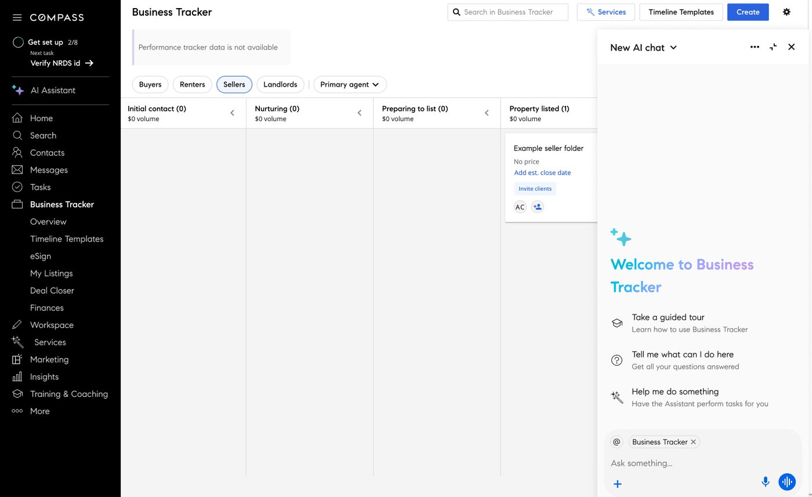
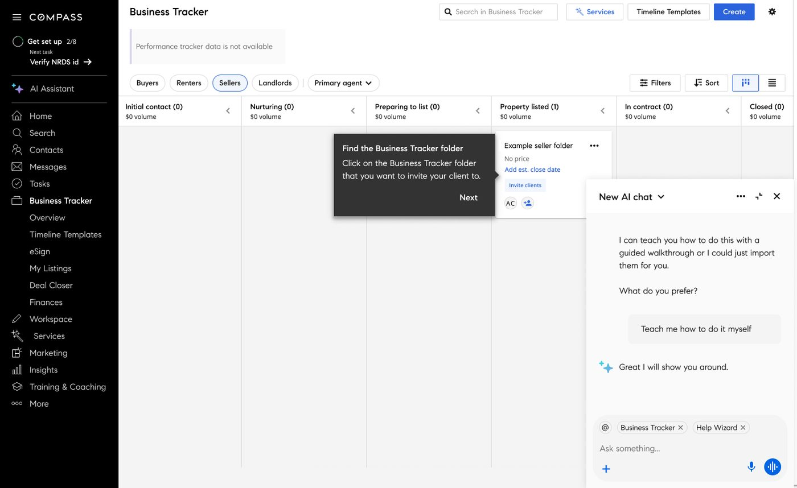
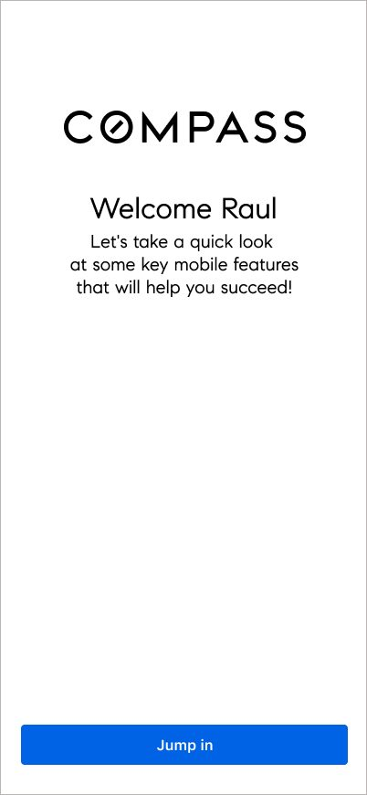
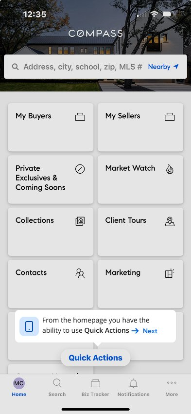
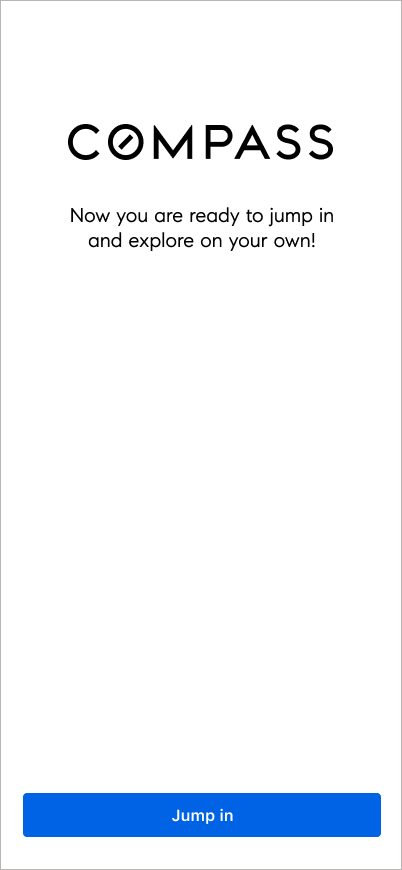

Onboarding · Compass AI in product · guided assistantPartial scope, see note below
Onboarding through a 10x jump in scale
When Compass acquired Anywhere, the agent base grew from roughly 30,000 to 300,000 almost overnight, and onboarding had to absorb all of it at once. I worked on the mobile onboarding flow and sat in on usability sessions for the broader experience, though I wasn't on this project end to end. This is a narrower case study than my others, scoped honestly to what I actually touched.

Onboarding on web: a checklist of setup tasks, with an AI assistant available throughout.
The problem
Compass's acquisition of Anywhere brought roughly ten times the existing agent base onto the platform in a short window. Most of these agents had never touched Compass before. Onboarding, which previously served a much smaller, steadier trickle of new agents, needed to teach an entire new population how the platform worked, on both web and mobile, without a proportional increase in support headcount.
Where I fit in
I designed the mobile onboarding flow, a short, guided walkthrough of the handful of features a new agent needed first. I also sat in on usability sessions for the onboarding experience more broadly, including the web version, which leaned on an AI assistant rather than a fixed tour. I didn't own that AI assistant or the web experience, and I wasn't on this project from kickoff through launch, so what follows is scoped to what I directly worked on and observed in testing.
Where AI showed up
A choice, not a script
On web, onboarding for a given task routed through an AI assistant that offered agents a real choice: take a guided tour, ask questions about what a feature does, or hand the task itself off to the assistant to complete. That last option, letting the assistant act on your behalf, was the fastest path on paper.

Three ways in: a guided tour, a Q&A, or letting the assistant just do it.
What usability testing surfaced
Agents didn't reach for the fast option
In sessions, that wasn't the path agents took. Offered a shortcut, more than one agent asked to be walked through it themselves instead, even when handing it to the assistant would have been quicker.

Offered a shortcut, this agent asked to be walked through it instead.
Key observation: the hesitation wasn't about confusion. Agents understood exactly what the assistant was offering to do. It looked more like reluctance to hand over control to something new, during a stretch when so much else, the platform, the company, the workflow, already felt unfamiliar. It's a useful reminder that trust in an AI feature isn't just a matter of a clear interface, it's earned gradually, and the very first ask an assistant makes of someone matters more than the rest of its feature list.
The mobile flow
A simpler, literal walkthrough
My part was the mobile onboarding: no AI assistant, just a short, linear tour pointing at the handful of features a new agent needed first, then a clear handoff back to exploring on their own.

A short welcome, setting expectations before the tour starts.

Tooltips point directly at the feature being introduced.

A clean handoff back to the app, no assistant required.
What I'd take from this
I'd want to see the AI-hesitancy finding followed up on more deliberately: whether it was about trust in that specific assistant, AI in general, or simply timing, given everything else agents were absorbing during the merger. I only saw a slice of this project, but it's one of the clearest real examples I have of a gap between what an AI feature is capable of and what people are actually ready to let it do on day one.